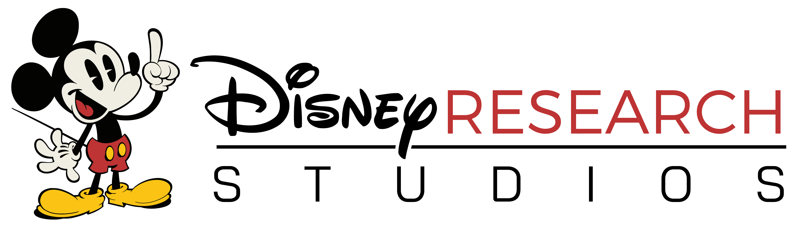

Current Sponsors
Platinum Sponsors

|
The Blue Yonder is the world leader in digital supply chain transformations and omni-channel commerce fulfillment. Our end-to-end, cognitive business platform enables retailers, manufacturers and logistics providers to best fulfill customer demand from planning through delivery. With Blue Yonder, you’ll unify your data, supply chain and retail commerce operations to unlock new business opportunities and drive automation, control and orchestration to enable more profitable, sustainable business decisions. Blue Yonder - Fulfill your Potential™ |
Gold Sponsors
|  | DisneyResearch|Studios in Zurich, Switzerland, focuses on exploring the scientific frontiers in a variety of domains in service to the technical and creative filmmaking process. Our world-class research talent in visual computing, machine learning, and artificial intelligence shapes early-stage ideas into technological innovations that revolutionize the way we produce movies and create media content. |
Institutional Sponsors
|
|
The University of Basel has an international reputation of outstanding achievements in research and teaching. Founded in 1460, the University of Basel is the oldest university in Switzerland and has a history of success going back over 550 years. Today, the University of Basel has around 13,000 students from over a hundred nations, including 2,900 PhD students. |

|
The Python Software Verband e.V. represents the Interests of users of the open-source programming language Python in Germany, Austria and German-speaking Switzerland. |
| Python Academy is a specialized Python training company. It offers open courses for individuals as well as customized on-site courses for companies and institutes. It covers a wide range of Python topics from introductory to advanced, Python for scientists and engineers, big data, web development, code optimization and many more. In addition to training, it consults companies that migrate to Python and develop high-quality Python software often in combination with training. The special expertise of the academy is scientific and technical software development with Python. |
Become a Sponsor
See guidelines on how to become a sponsor here.